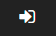
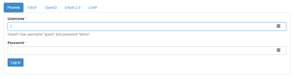
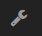
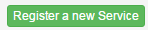
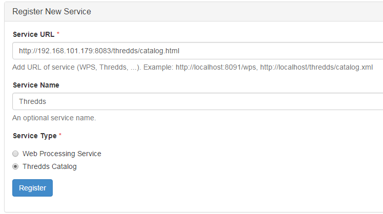
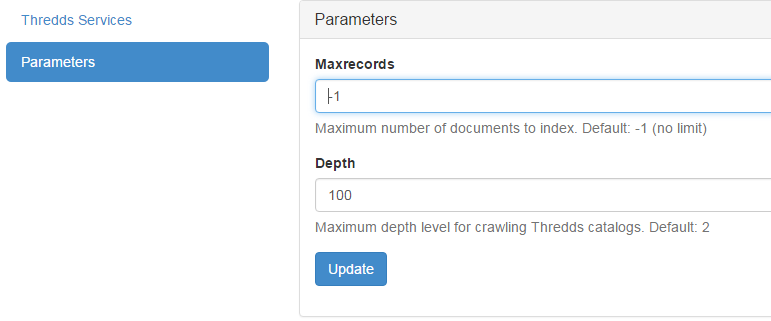
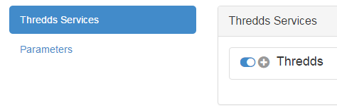

Birdhouse service configuration¶
All birdhouse components are deployed and configured using the following methods:
- Run
docker-composeon adocker-compose.ymlconfig file to launch a group of containers using their images and some options. - When a container is starting a make call with the target update-config and start is done (specified by the dockerfile CMD statement)
- The update-config target update the container application config using buildout and the custom.cfg config file
- The start target launch the application using supervisor
To customize the container application config we must also update the custom.cfg file used by the buildout recipe of each container.
- Since custom.cfg is built into the docker image and thus reset each time we run an image the only way to alter it is to mount a host file inside the container using the volume option. Therefore a
custom.cfgis configured on host for each birdhouse component and mounted inside the container using the volume option of thedocker-compose.ymlfile. This way each time a container is started, it is configured by the hostcustom.cfgfile which indeed persist the lifecycle of a container- The
custom.cfgis a buildout configuration file which extendsbuildout.cfgproviding default parameters. Each birdhouse component has it’s own buildout recipe looking for particular parameters to configure their application.
Note
An exemple recipe for ncWMS configuration can be found here: https://github.com/bird-house/birdhousebuilder.recipe.ncwms. Look on github for other components recipe : https://github.com/bird-house.
Hummingbird¶
For more information on Hummingbird, see the Hummingbird-Birdhouse documentation.
Warning
First try at running CDO operation using the Hummingbird WPS (with url for input NetCDF file, only seems to work with the fileserver, not OPeNDAP), e.g. : http://132.217.140.31:8092/wps?service=WPS&version=1.0.0&request=Execute&identifier=cdo_operation&DataInputs=dataset=http://192.168.101.175:8083/thredds/fileServer/birdhouse/nrcan/nrcan_canada_daily/nrcan_canada_daily_pr_1960.nc;operator=monmax returns “PyWPS Process cdo_operation successfully calculated”. However the output points to a NetCDF file on localhost (http://localhost:38092/wpsoutputs/hummingbird/output-4f80cb02-58db-11e6-8a37-533b457038a6.nc). Need to substitute localhost for the ip (132.217.140.31) and keep the same port : http://132.217.140.31:38092/wpsoutputs/hummingbird/output-4f80cb02-58db-11e6-8a37-533b457038a6.nc Previous note: the same operation with the command-line, and using the OPeNDAP link (i.e. >> cdo monmax http://132.217.140.31:8083/thredds/dodsC/birdhouse/nrcan/nrcan_canada_daily/nrcan_canada_daily_pr_1960.nc output.nc) succeeds, in ~3 minutes. It is much faster if the file is local. This brings up the question of whether we should pass the catalogue url when we know the file is actually on a local machine… Trying to execute the same process via our Phoenix installation is not possible. The execute button remains greyed out after entering an url and selecting an operator.
Phoenix¶
Note
The Phoenix service requires a valid ssl certificate and key prior to running docker-compose in order to make use of HTTPS. In the docker-compose.yml file, within the phoenix/volumes configuration, set the environment variable SSL_CERTIFICATE to a valid certificate. This certificate file should contain both the CERTIFICATE and PRIVATE KEY parts as required by the nginx “ssl_certificate_key” and “ssl_certificate” parameters.
For more information on Phoenix, see the Pyramid-Phoenix documentation.
/config/phoenix/custom.cfg¶[settings]
# User: admin, Password: querty
phoenix-password = sha256:...
To change password get into the phoenix running container and use make passwd. This will update the persistant host custom.cfg with the new password hash.
If an error about missing IPython.lib occurs install ipython like this:
source $ANACONDA_HOME/bin/activate birdhouse
pip install ipython
Phoenix still requires manual configuration in order for Solr to correctly index the THREDDS catalog:
Go to https://<platform_url>:8443/
Click on the login button 
Use the admin phoenix access with ‘querty’ password:
Go to the settings page 
Click on the |service| button:

Register a new service:
Fill the form using the thredds catalog url (use the OpenStack internal IP), a service name of your choice and be sure to check the Thredds Catalog service type :
Click on the register button
Go to the Solr settings page by repeating the steps 4 and 5 but this time using the Solr button.
Use the Parameters tab and increase the crawling depth to match the deepest catalog depth :
Activate the crawling in the Thredds Services tab by clicking on the toggle button near the + symbol.
The status should turn to green when you click on the refresh button.
ncWMS¶
/config/ncwms2/custom.mfg¶[settings]
tomcat-ncwms-password = <enter ncwms password>
[ncwms]
data_dir = /pavics-data
Manual setup of the running docker¶
To access the ncWMS admin page (changes be overriden each time the container is restarted), edit the file: /opt/conda/envs/birdhouse/opt/apache-tomcat/conf/tomcat-users.xml and remove the comment block around the manager-gui and ncWMS-admin role.
The administration page allow administrators to add new datasets but again it will not persist upon container restarting.
Default Tomact credentials:
username="birdhouse"
password="4FO72WcTt7K9gYiNKApf"
Default ncWMS credentials:
username="admin"
password="ju68hfld"
Dynamic services¶
Warning
The dynamic services section allow with only one command to enable access to all the database available at M:data16projetsmultiPAVICSdata by configuring a file system entrypoint. The only thing to do is to use the following url: http://<domain>:8080/ncWMS2/wms?SERVICE=WMS&REQUEST=GetCapabilities&VERSION=1.3.0&DATASET=outputs/<path> and replace <path> by the relative path to M:data16projetsmultiPAVICSdata to the required dataset. So thanks to this config and to the catalog service we should be able to get the entire database list from the catalog and access their WMS by using the relative path in the wms url.
THREDDS¶
[thredds]
data_root = /pavics-data
allow_wcs = true
allow_wms = true
PAVICS-DataCatalog¶
In the catalog.cfg file: * Provide the solr and THREDDS host. * Set the wps host to the server that will be exposing the catalog (this is the server where wps temporary output files will be saved). * Set the WMS alternate server if desired.
Magpie¶
FlyingPigeon¶
Emu¶
Other Birds?¶
Todo
Examine the Birdhouse/Birdhouse-Docs to see if this section can be merged back to it and joined as a submodule here. Birds of interest are listed there.